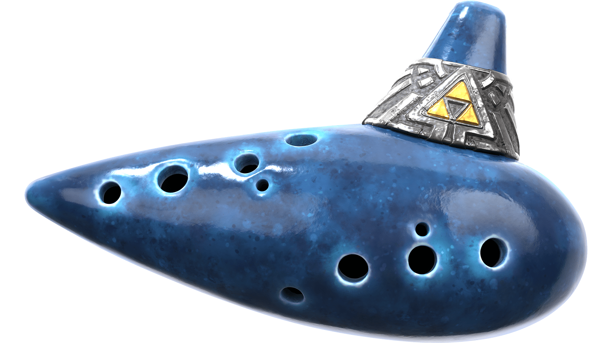

Ocarina of Time
Five notes. A world of memories. Play a little magic.
THE OCARINA OF TIMEReady to play

A keepsake from the land of HyruleAD4
↓F4
→A4
←B4
↑D5
Use A and your arrow keys, or touch the notes above.
Hold a note to let it sing.
Your melody
Every adventure begins with a note.
YOUR SELECTED MELODY
Zelda’s Lullaby
A melody passed down through Hyrule’s royal family.
Follow the notes from left to right.